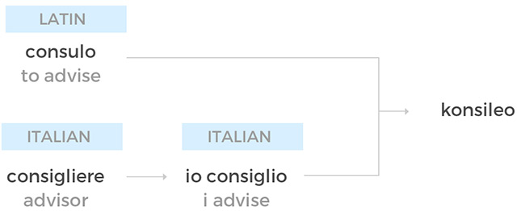

To advise in a long-term relationship, particularly where there is a deep personal commitment from the advisor to the client
”Dean konsileo’d James on his risk management strategy as his company grew from 30 to 300 people over 10 years”
Adjective
The benchmark for great quality business advice
"Dean's advice to James achieved konsileo levels of clarity and empathy"
Etymology

Popularised by the Godfather, the consigliere is a close, trusted friend and confidant, the mob’s version of an elder statesman… dispenses disinterested advice.
CONSIGLIERE. n.d. in WIKIPEDIA
Who We Are
Konsileo is a commercial insurance broker using technology to empower individuals and replace hierarchical management with professional collaboration.
Our technology disrupts the traditional broking model in two ways.
Firstly, it addresses the operational challenges of regulatory compliance, data capture and duplication with an intuitive platform that gives brokers back more time to spend winning and retaining clients.
Secondly, our technology underpins the creation of a community of modern brokers without hierarchy. Brokers who support each other, share expertise, and are rewarded for working together.
Insurance Is Broken
Insurance exists to spread risk. However, a lot of complexity has crept into the way insurance is transacted and many insurers and brokers have lost sight of the underlying risks that businesses are trying to protect themselves against.
Too many times do businesses have the wrong insurance, under-insurance and over-insurance, with many renewals simply becoming a tick box exercise, the art of effectively advising has been lost.
Insurers and brokers have also failed to keep up with the pace of modern technology which has added a layer of complexity to the sharing of data between insurers, brokers and clients.
Konsileo seeks to strip insurance back to the fundamental reason insurance exists via a deep understanding of the risks in a customer’s business with a fully client-centric approach.
Broking Is Broken
Insurance advice is highly valued by businesses as the risks they face increase in complexity. The people who deliver that advice, insurance brokers, are highly skilled and appreciated.
Unfortunately, many of the firms that those people work in have gone in the wrong direction by:
1. Consolidating with a focus on gaining more commissions from insurers, undermining the independence of their brokers.
2. Reducing headcount and adding budget controls in a bid to generate efficiency, disrupting established relationships and changing the local, positive cultures of the firms they acquired.
3. Underinvesting in technology so that up to 70% of time is lost in inefficient back office processes.
The people in broking are great, they are intelligent and care about their clients …. But the firms with their systems and processes no longer effectively support them in delivering for their clients, which is why Konsileo was created.
- John Warburton
The Future Of Broking
Brokers will spend more time with clients and less time on administrationThe technology revolution provides a huge opportunity to streamline and eliminate a lot of the administrative tasks draining brokers time. By utilising the latest technology, brokers will have more time to develop, nurture and grow their client relationships, becoming a true business advisor.
Brokers will work independently but be part of a supportive and collaborative communityThe fundamental part of an insurance broker’s job is to service their clients. Therefore, they will have the opportunity to work more independently and more flexibly. Given the future of work megatrend this will give rise to mentoring rather than management. The culture will shift to a more autonomous and self-managed way of working, with mentors providing a support system and colleagues providing a collaborative community.
Clients will have the best professional advice augmented by state of the art data and technology toolsClients will have full transparency of their business risks and documentation via an online portal, along with a named individual to deal with all their insurance needs who will become a fundamental part of their overall business and risk management strategy.
Insurers will have additional data to help them underwrite and efficient interactions to reduce processing costsInsurance companies will have greater access to client data, where broking firms will continue to build up 360 degree views of a client’s business with a constant flow of data maintaining an updated record of both the clients insurable and uninsurable risks, thus deeping the level of understanding of the underwriter, which will translate into better, more protected clients.
Our Vision
Konsileo is the insurance broker of the future built around efficiency, professionalism, collaboration and client service, leading to happier brokers and happier clients.
By combining the importance of face to face advice with the latest in data and analytics, along with best in class technology to not only insure client’s businesses but to anticipate and prevent future risks in the long-term, we can support the development and growth of our brokers whilst also delivering the best service for our clients.
Future Of Work
The Future of work is a hugely relevant topic for an industry built around face to face relationships. Insurance is plagued with headlines of ‘AI taking over the world’ and ‘Robo-advisors are here to stay’. However, the commercial insurance space is still dependent on people given the heterogenous nature of the data that needs capturing. Beyond this clients are still reluctant to insure their businesses via online means, particularly once their business reaches any level of sophistication and complexity.
For insurance brokers a role still very much exists but given the negative impact the current organisational structure has on client servicing it will likely take on a very different form.
‘Reinventing Organizations’ sheds light on an entirely new working paradigm focussed on self-managed and autonomous teams that actually deliver higher economic output whilst employees remain engaged, focussed and happy. Apply this to the broking scenario and a positive outcome is not only possible but makes sense due to the nature of the roles necessary and the tech that exists to facilitate the strengthening of these relationships both internally and externally.
Reinventing Organizations Frederic Laloux
MEET THE TEAM
John has 20+ years international insurance and consulting experience at Aviva, Accenture and most recently Allianz where he was responsible for global marketing strategy and digital initiatives. John is an Associate of the CII, holds an MBA from London Business School and a BA in Politics from SOAS, University of London. John is also a mentor at Startupbootcamp.
John Warburton
Founder (Insurance, Digital)
Peter has 20+ years technology experience including delivering early websites for BA.com, 10 Downing Street and the BBC along with running his own company delivering management information systems for SMEs. Peter has an MA in Maths from the University of Cambridge and most recently worked at Big White Wall where he was CTO.
Peter Henderson
Founder (Tech, process, automation)
Mel most recently worked at American Express, driving acquisition growth for the BA and Gold cards online. She also has extensive agency experience having worked in London for WPP and for a native advertising start-up in New York focused on delivering high brand engagement for P&G. Mel has a BSc in Psychology from the University of Leeds.
Melanie Palmer
Marketing Lead
David is a product manager with a heavy focus on high growth startups. Having graduated from the International Space University (ISU), David went on to become a product manager at NASA and Geniac where he delivered commercially viable digital products including sending a camera to space and managing the development of online platforms.
David Sulitzer
Product Lead
Gabi has 10 years’ experience in development testing, specialising in sprint management and delivery. Having previously worked at Cardif Pinnacle underwriters and most recently at Big White Wall, an online mental health organisation (where she met Peter) , Gabi has had extensive exposure to both the insurance and start up world.
Gabriella Shaw
Delivery Lead
Ian has worked in technology for over 25 years, working in a number of insurance companies (including Allianz where he met John) and working on a variety of both complex and cutting edge implementations, developing a real mix of technical and user analysis skills. He has most recently worked with Virgin Atlantic where he gained an even greater understanding of the demands of great functional and user design.
Ian Wilson
Business Analyst
Arindra has extensive experience building digital products, using a customer-centred approach having worked with the likes of Microsoft services, Ericsson research, Nokia and ABB. Arindra also served as an interim VP/Chief product/UX designer to many early stage startups and was an Entrepreneur in Residence at Startupbootcamp FinTech.